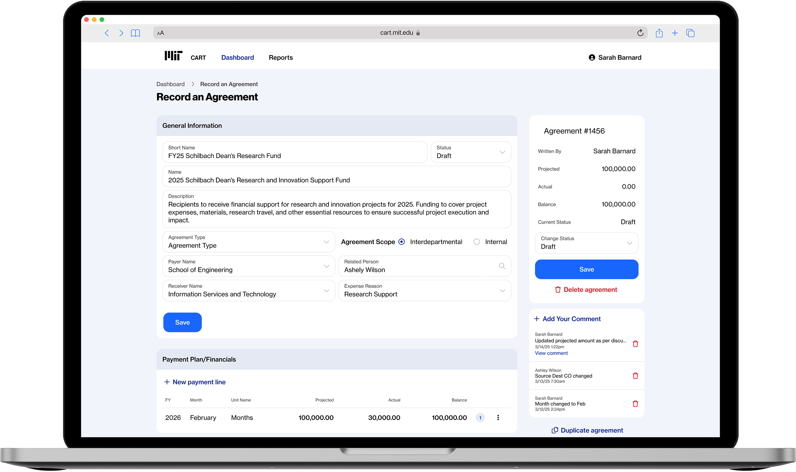
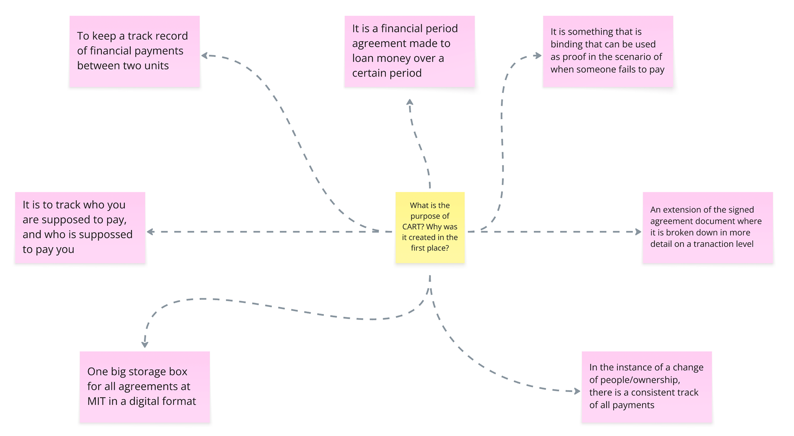
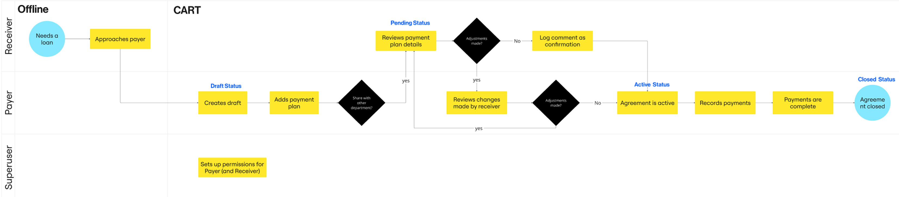
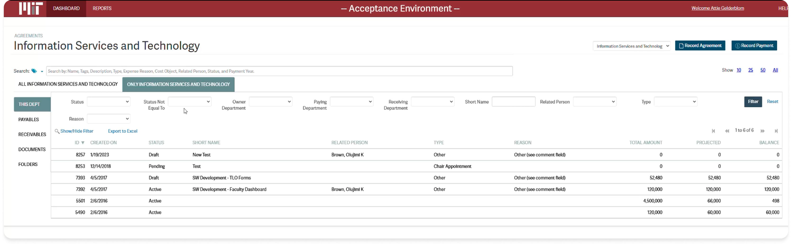
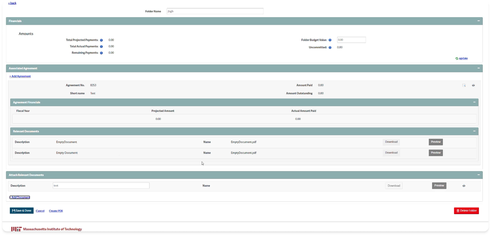
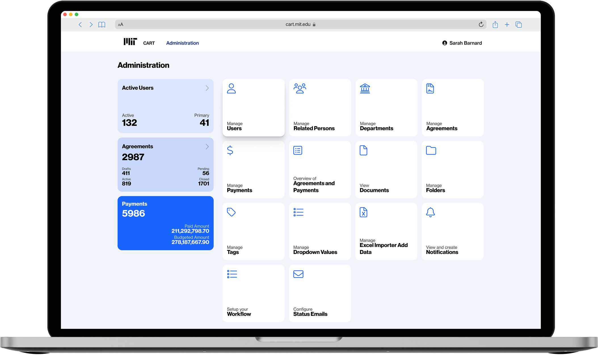
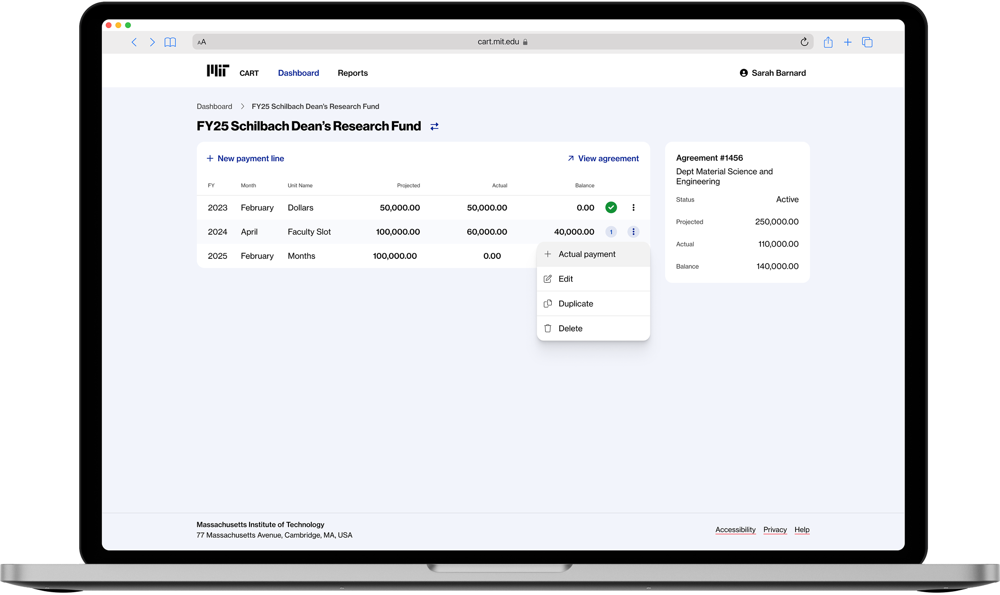
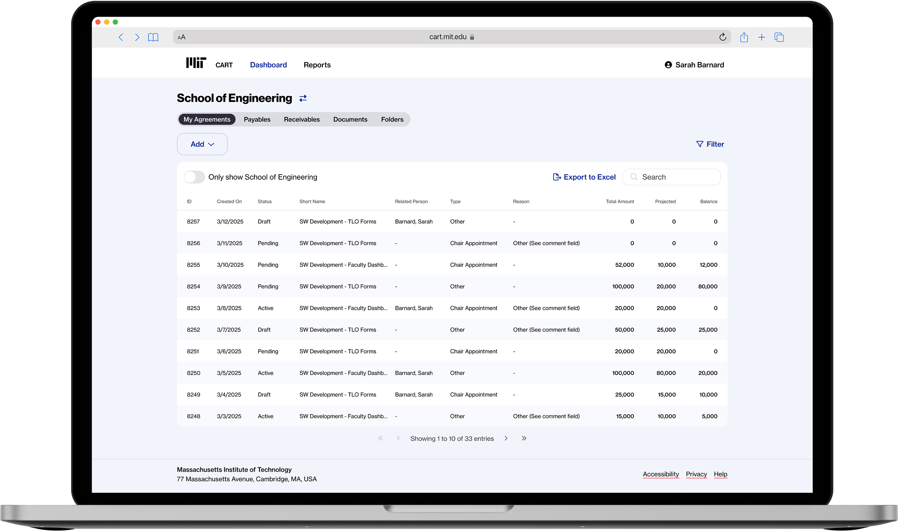
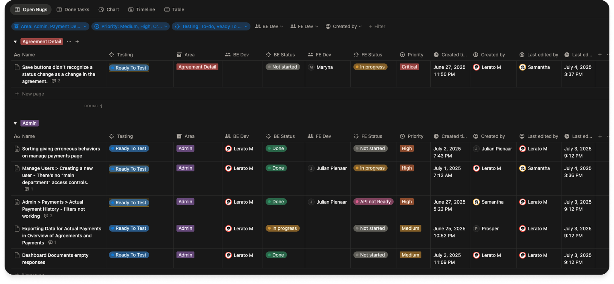
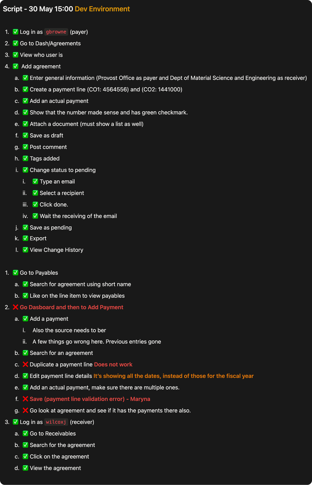

Establishing and tracking departmental agreements
The CART platform manages interdepartmental financial agreements at MIT. Users including Payers, Agreement Owners, Superusers, and Receivers navigate complex nested data structures to establish and track budget commitments.
My Impact
The platform lacks clear guidance for setting up interdepartmental agreements, resulting in confusion and inefficiency for users. Complex nested tables and numerous input fields create cognitive overload, making it difficult for users to complete tasks accurately.
What is CART?
I participated in developer meetings and documentation reviews to understand the application thoroughly before proposing any design changes.

Identifying the Users
User roles include Payer, Agreement Owner, Superuser, and Receiver — each with different access levels and responsibilities.


The Agreement Workflow
Agreements progress through a defined status lifecycle: draft → pending → active → closed.

Navigating the Existing App
The existing application featured complex nested tables and numerous input fields that contributed to significant cognitive overload.


Crafting a Better UX/UI Experience
I redesigned the interface using the MIT component library, focusing on reducing cognitive overload while maintaining existing workflows through standardised component usage.



Bug Board for Testing
I created a Notion-based testing board to track progress, task status, and ownership throughout the QA process.

Demo Script for Clients
I developed structured testing procedures and demo scripts for client demonstrations, ensuring consistent quality validation.
